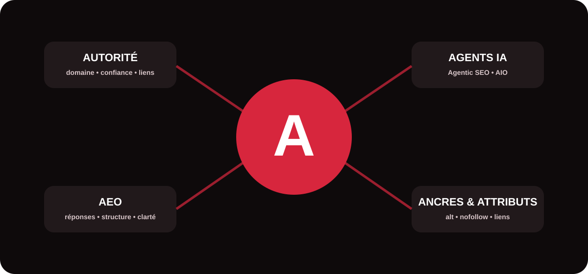

Le vocabulaire du référencement évolue vite. Certaines notions sont historiques, d’autres sont apparues avec les moteurs génératifs et les agents IA. Ce glossaire a été conçu comme une ressource pédagogique : chaque définition explique ce que le terme signifie, pourquoi il compte et comment l’intégrer à une stratégie de visibilité cohérente.

Autorité de domaine
L’autorité de domaine désigne, au sens général, la capacité perçue d’un site à être considéré comme crédible et compétitif sur son marché. Des outils SEO proposent leurs propres scores d’autorité, calculés notamment à partir des backlinks.
Il ne s’agit pas d’un indicateur officiel de classement de Google. Pour progresser, mieux vaut travailler la qualité éditoriale, la réputation de la marque, la pertinence thématique et l’acquisition de liens fiables plutôt que poursuivre un score isolé.
Qu’est-ce que l’AMP, et faut-il encore l’utiliser ?
AMP (Accelerated Mobile Pages) est un framework open source conçu à l’origine pour accélérer fortement l’affichage des contenus web, notamment sur mobile. Il s’appuie sur un HTML encadré et sur des composants optimisés afin de limiter les éléments susceptibles de ralentir le chargement.
Faut-il encore utiliser AMP ? Pas nécessairement. Google indexe les pages AMP comme les autres pages web et leur applique les mêmes standards. AMP peut donc rester pertinent pour un site qui l’utilise déjà efficacement ou pour un projet ayant un besoin technique précis, mais il ne constitue pas un passage obligé pour obtenir de bonnes performances SEO. Pour un nouveau projet, la priorité est généralement de construire des pages rapides, responsives, stables et accessibles, avec une excellente expérience utilisateur.
agentic SEO
L’Agentic SEO désigne l’utilisation d’agents d’intelligence artificielle capables d’exécuter ou d’orchestrer plusieurs tâches SEO avec une certaine autonomie : collecte de données, classification d’intentions, détection d’anomalies, création de briefs ou priorisation d’actions.
Agentic IA
L’Agentic IA décrit des systèmes d’IA capables de poursuivre un objectif en planifiant des étapes, en utilisant des outils et en adaptant leurs actions selon les résultats obtenus. Contrairement à un simple chatbot qui répond à une instruction, un agent peut enchaîner plusieurs opérations.
Pour le marketing digital, cela ouvre la voie à des workflows plus autonomes, tout en imposant des règles de gouvernance, de vérification et de protection des données.
Artificial Intelligence Optimization (AIO)
L’Artificial Intelligence Optimization (AIO) regroupe les pratiques visant à rendre des contenus et informations plus facilement exploitables dans des environnements utilisant l’IA. Selon les usages du marché, le terme peut recouvrir l’optimisation de contenus assistée par IA ou la préparation d’une marque à la recherche alimentée par IA.
Dans une stratégie MinoSeo, l’AIO complète le SEO et le GEO : informations explicites, structure logique, données fiables, expertise identifiable et contenus réellement utiles.
Allintitle Google
allintitle: est un opérateur de recherche Google qui sert à rechercher des pages dont le titre contient les termes indiqués. Il peut aider un référenceur à observer la présence de certaines expressions dans les titres déjà indexés.
Ce nombre ne doit toutefois pas être interprété comme une mesure exacte de difficulté SEO. L’intention de recherche, la qualité des concurrents et la pertinence de leurs pages sont plus importantes qu’un simple volume de résultats.
Answer Engine Optimization
L’Answer Engine Optimization (AEO) consiste à structurer l’information pour augmenter les chances qu’elle puisse répondre directement et clairement à une question : moteur de réponse, assistant vocal, extrait enrichi ou interface conversationnelle.
L’AEO favorise les définitions précises, les réponses synthétiques, les FAQ utiles et une architecture sémantique claire. Il partage ainsi plusieurs fondamentaux avec le SEO et le GEO.
AIDA
AIDA signifie Attention, Intérêt, Désir, Action. Ce modèle de copywriting organise un message pour attirer l’attention, développer l’intérêt, faire émerger le désir puis conduire vers une action.
| Étape | Rôle dans un contenu web |
|---|---|
| Attention | Accroche, titre ou promesse claire. |
| Intérêt | Explication du problème et de ses enjeux. |
| Désir | Bénéfices, preuves et différenciation. |
| Action | CTA explicite : contact, devis, audit ou achat. |
Affiliation Marketing
L’affiliation marketing est un modèle dans lequel un partenaire recommande une offre et reçoit une commission lorsqu’une action attribuée à sa recommandation est réalisée, par exemple une vente ou une inscription.
En SEO, les sites d’affiliation doivent apporter une vraie valeur ajoutée : comparatifs sérieux, tests, expertise, transparence et contenu original. La simple duplication de fiches marchandes crée peu de valeur pour l’utilisateur.
Action manuelle
Une action manuelle intervient lorsque Google considère qu’un site ou certaines de ses pages ne respectent pas ses règles anti-spam et qu’une intervention humaine applique une mesure. Elle peut affecter la visibilité d’une partie ou de l’ensemble du site.
Le diagnostic passe notamment par Google Search Console. Il faut identifier la cause, corriger réellement le problème puis, lorsque cela s’applique, demander un réexamen.
Analyse temporelle de liens
L’analyse temporelle de liens étudie l’évolution d’un profil de backlinks dans le temps : nouveaux liens, liens perdus, rythme d’acquisition, domaines référents, ancres et changements inhabituels.
Cette lecture chronologique permet de distinguer une croissance naturelle d’une variation brutale, d’identifier des campagnes efficaces et de surveiller la santé globale d’une stratégie de netlinking.
Algorithme Google
L’expression algorithme Google désigne l’ensemble des systèmes utilisés par Google pour explorer, comprendre, sélectionner et classer les contenus pertinents pour une recherche. Le classement ne repose pas sur une règle unique mais sur de nombreux systèmes et signaux.
Une stratégie durable évite donc de « courir après l’algorithme ». Elle privilégie un site techniquement propre, une réponse pertinente à l’intention, une expérience satisfaisante et des signaux de confiance cohérents.
Alt text Attribute
L’attribut alt fournit une alternative textuelle à une image lorsque celle-ci porte une information utile. Il améliore l’accessibilité pour les personnes utilisant des technologies d’assistance et aide les moteurs à comprendre le rôle de l’image.
Un bon texte alternatif reste descriptif et contextuel. Il ne doit pas devenir un emplacement destiné à accumuler artificiellement des mots-clés.
Annuaire de référencement
Un annuaire de référencement répertorie des sites ou entreprises par catégories. Historiquement très utilisés pour obtenir des backlinks, les annuaires ont aujourd’hui une valeur très variable.
Une inscription peut être pertinente si l’annuaire est réel, thématique ou local, modéré et utile aux internautes. Les soumissions massives sur des réseaux de faible qualité sont à éviter.
Attribut nofollow
L’attribut nofollow s’utilise sur un lien via la valeur rel="nofollow". Il indique aux moteurs une relation particulière avec le lien. Google traite aujourd’hui cette valeur comme un indice pour ses systèmes de recherche.
Selon le contexte, d’autres valeurs existent, notamment sponsored pour certains liens publicitaires ou rémunérés et ugc pour du contenu généré par les utilisateurs.
Ancre de lien
L’ancre de lien est le texte cliquable d’un lien hypertexte. Elle aide l’utilisateur et les moteurs à comprendre ce qu’ils trouveront sur la page de destination.
Pour le maillage interne, une ancre descriptive est généralement plus informative qu’un « cliquez ici ». En netlinking, un profil naturel comporte des ancres variées : marque, URL, formulations contextuelles et expressions pertinentes sans sur-optimisation systématique.
Adresse IP
Une adresse IP identifie une interface ou un équipement sur un réseau utilisant le protocole Internet. Côté web, un nom de domaine est résolu vers une infrastructure serveur grâce au DNS.
En SEO, l’adresse IP peut intervenir dans des diagnostics techniques — hébergement, migration, DNS, disponibilité ou sécurité — mais partager une IP avec d’autres sites est courant et ne constitue pas, à lui seul, un problème de référencement.
Comment utiliser ce glossaire dans votre stratégie ?
Ces termes appartiennent à quatre grandes familles : autorité et liens, technique, contenu et conversion, puis IA et moteurs de réponse. Leur intérêt ne vient pas de leur maîtrise théorique, mais de la capacité à les relier aux objectifs d’un site : être trouvé, compris, jugé crédible et convertir.
MinoSeo, agence SEO/GEO depuis plus de 15 ans, accompagne ses clients pour transformer ces concepts en priorités mesurables : audit, optimisation technique, stratégie éditoriale, GEO, netlinking et suivi des performances.
| Famille | Termes concernés | Enjeu principal |
|---|---|---|
| IA & moteurs de réponse | Agentic SEO, Agentic IA, AIO, AEO | Structurer des contenus compréhensibles et exploitables par les environnements IA. |
| Autorité & liens | Autorité de domaine, analyse temporelle de liens, nofollow, ancre de lien, annuaire | Évaluer et renforcer la crédibilité externe sans sur-optimisation. |
| Technique | AMP, Alt text, adresse IP | Améliorer accessibilité, performance et compréhension technique. |
| Recherche & algorithmes | Allintitle, algorithme Google, action manuelle | Mieux interpréter la visibilité, la concurrence et les risques SEO. |
| Marketing | AIDA, affiliation marketing | Relier visibilité, persuasion et conversion. |
Votre visibilité mérite une stratégie lisible et durable
Faites analyser votre site et identifiez les leviers SEO/GEO à prioriser selon vos objectifs.
Demander un audit gratuit